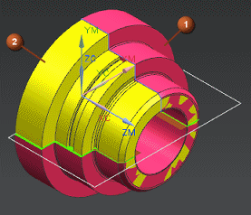

Choose Format→Layer Settings.
The Layer Settings dialog box is displayed.
In the Layers group, in the Name column, select the check box next to 110.
Click Close.
The in-process workpiece (1) is superimposed on the finished part (2).

Refresh the graphics window.